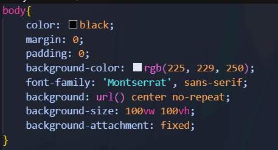
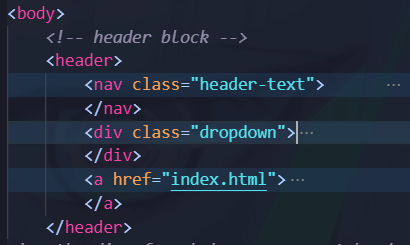
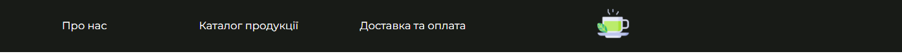

Звіти з лабораторних робіт
з дисципліни "інтернет-технології та проєктування web-застосувань
Студент групи ІС-31 Гармаш Максим Андрійович
Лабораторна робота 1
Лабораторна робота 2
Лабораторна робота 3
Лабораторна робота 4
Лабораторна робота 5
Лабораторна робота 6
Лабораторна робота 7
Лабораторна робота 8
Лабораторна робота 9
Тема, мета, місце розташування лабораторної роботи
Способи підключення стилів
Селектори
Селектори тегу
Селектори класу
Селектори тегу ідентифікаторів
Інші селектори
CSS: Шрифти Текст Таблиці Фон Контур Списки СSS Просунутий
Висновки
  